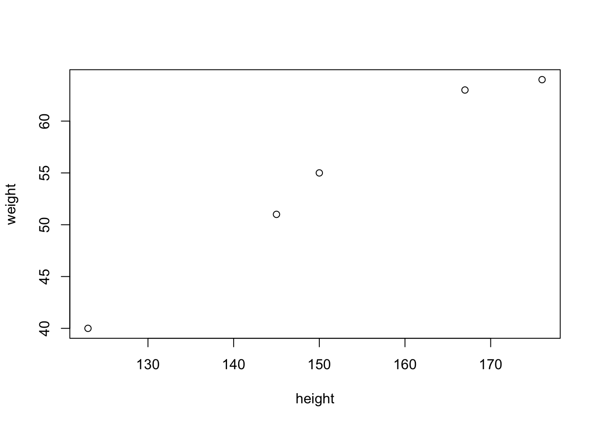
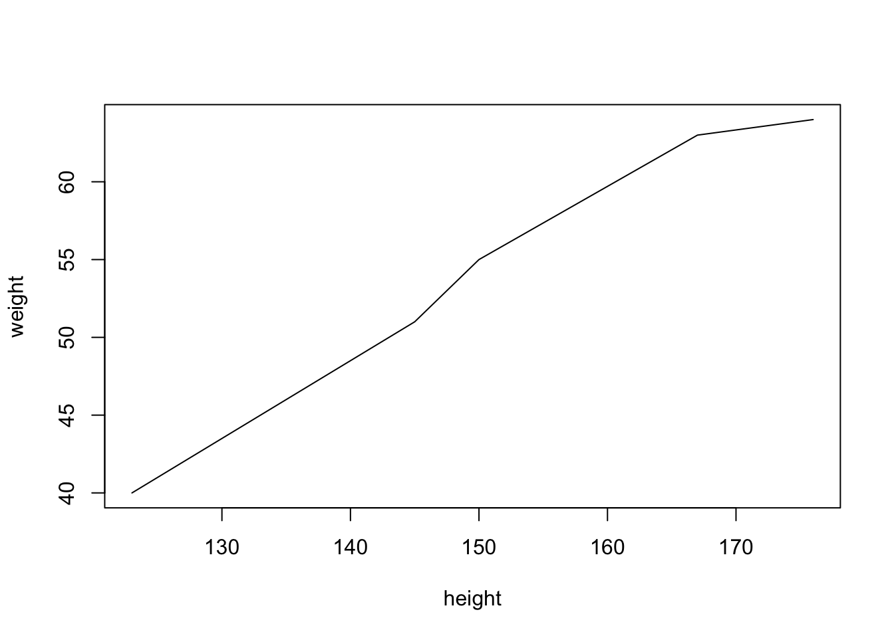
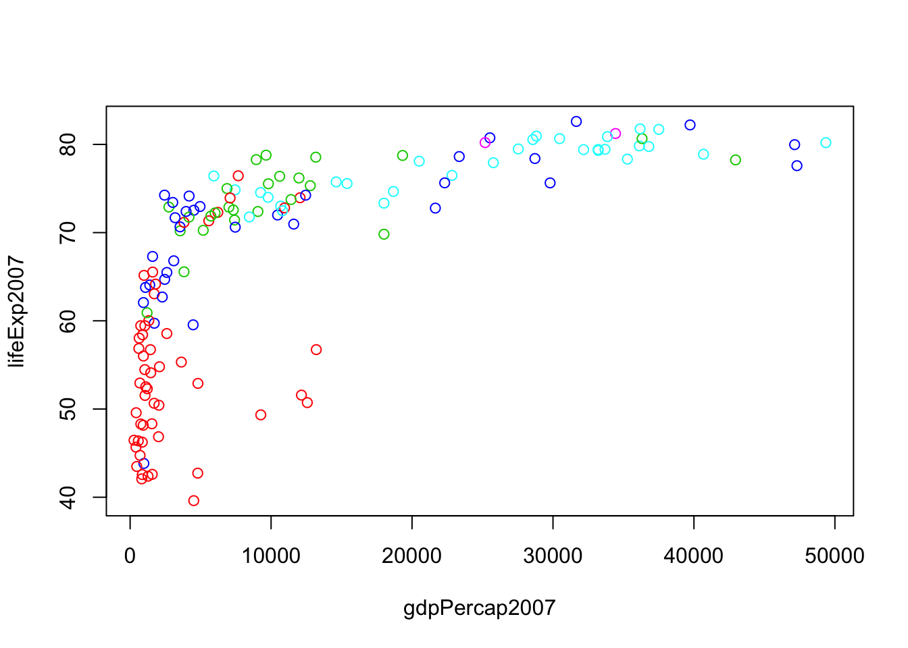
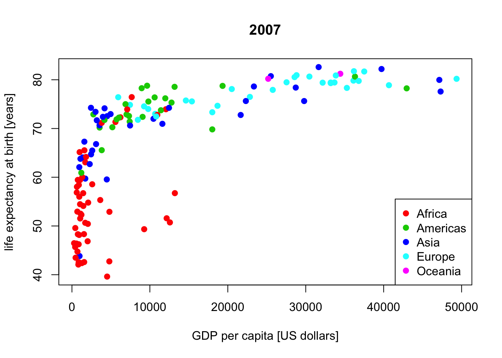
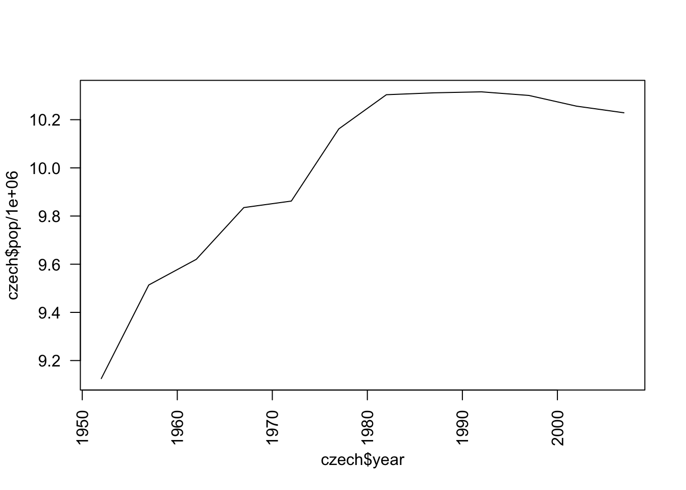
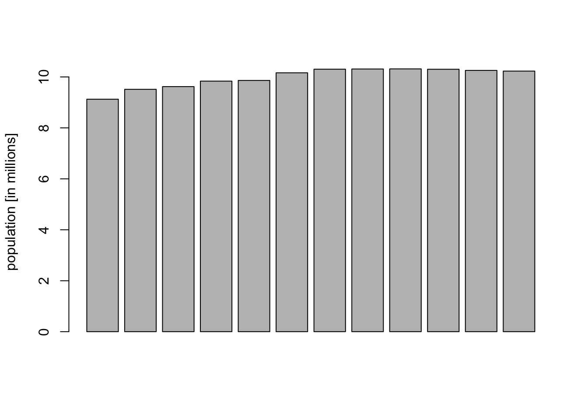
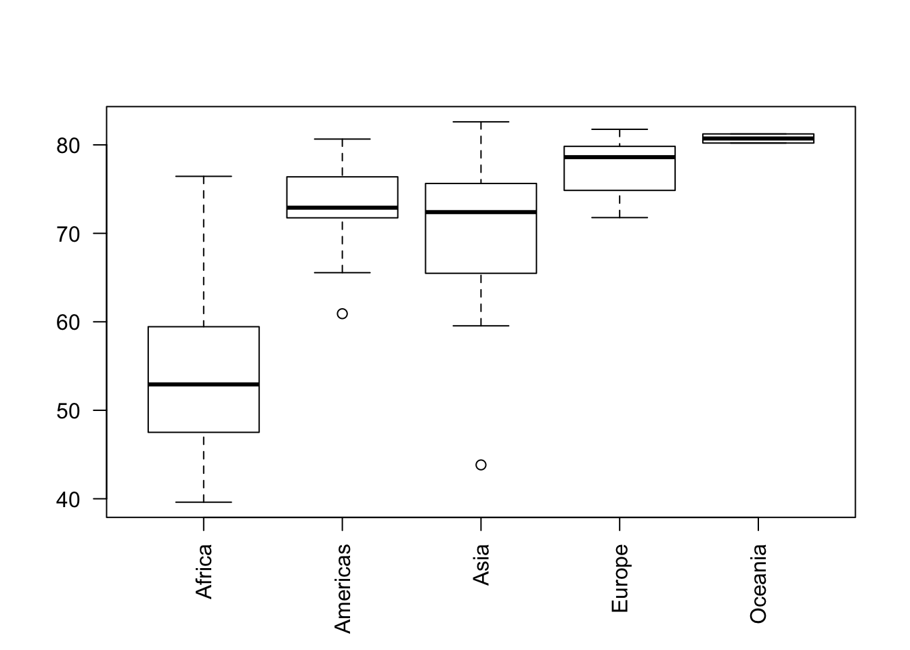

One of the strength of R is its ability to produce a wide range of plots. Multiple plotting library exists and even the base R graphics is powerful and can be mastered in a few hours.
X-Y Plotting
Basic plot call takes the following form plot(x=, y=), for example
height <- c(123, 145, 150, 167, 176)
weight <- c(40, 51, 55, 63, 64)
plot(height, weight)
Use main to set the title, xlab and ylab for x- and y- labels, xlim and ylim for x- and y- limits, type to set a type of the graph (“p”=points, “l”=lines, “b”=both, “n”=none) and col to choose colors.
Challenge 1:
Modify the code above to get points connected by line

Or to see both points and lines like on the plot below.
To the existing plot, you can add lines (lines, abline), points (points), legend (legend), text (text) and other objects.
Gapminder dataset
Gapminder is a an excerpt of the Gapminder data on life expectancy, GDP per capita, and population by country. It is distributed as R package. The following code loads gapminder (and if missing install it) and prints the first few lines:
# check if gapminder can be loaded, if not install it
if (!require("gapminder")) {
install.packages("gapminder")
library("gapminder")
}## Loading required package: gapminderdata(gapminder)
head(gapminder)## country continent year lifeExp pop gdpPercap
## 1 Afghanistan Asia 1952 28.801 8425333 779.4453
## 2 Afghanistan Asia 1957 30.332 9240934 820.8530
## 3 Afghanistan Asia 1962 31.997 10267083 853.1007
## 4 Afghanistan Asia 1967 34.020 11537966 836.1971
## 5 Afghanistan Asia 1972 36.088 13079460 739.9811
## 6 Afghanistan Asia 1977 38.438 14880372 786.1134Type ?gapminder into your console to get info about the dataset and try to answer the following questions.
Challenge 2
How many rows and columns are in gapminder? What was the population of Czech Republic in 1952? Which country has the highest GDP per capita in 2007?
Challenge 3
For 2007, make a scatterplot of life expectancy vs. GDP per capita and color each state by its continent.

Now try to style the plot a bit by ading the title, labels and a legend.

Histograms
Histograms are plotted with hist function (see ?hist for help and examples).
Challenge 4
Plot a histogram of life expectancies in 2007 over all countries: 
Barplot
Barplots are plotted with barplot function.
Challenge 5
Visualize how the population of the Czech Republic grows by a line and a barplot. Which plot do you prefer?

More than one plot in a window
With a graphical parameter mfrow we can get two or more plots into one window (or file). For example comparing the histogram plot to a density plot like below.
czech <- subset(gapminder, country == "Czech Republic")
par(mfrow = c(1,2)) # one row, two columns
hist(czech$gdpPercap, main="Histogram")
plot(density(czech$gdpPercap), main="Density")
Boxplot
Boxplots can be used to compare data from several groups.
Challenge 6
For 2007, compare life expectancies between the continents.
year2007 <- subset(gapminder, year == 2007)
# las = 2 plots text perpendicularly to axis
boxplot(lifeExp ~ continent, data=year2007, las=2)
Saving the plots
See the help and examples for pdf, png, dev.off and dev.copy functions.
Challenge 7
Save the last plot into PDF and PNG files.
Are the plots same or different? Why?